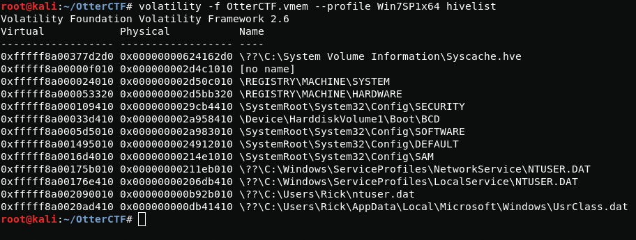
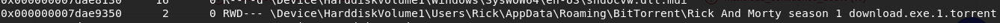
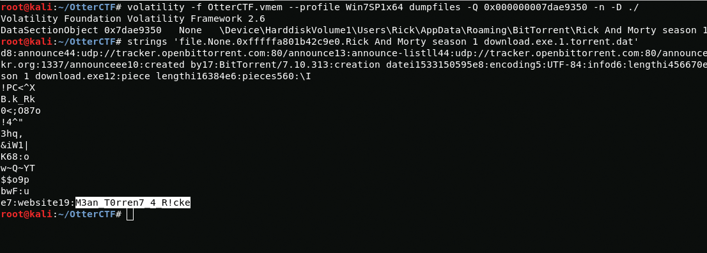
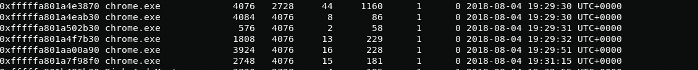

Good day. This post will be devoted to Computer Forensics. Forensics is quite extensive and has many areas, but today I would like to touch on the topic of Memory Forensic. This is a forensic analysis of a computer memory dump. It is used to investigate complex computer attacks that leave no marks on the hard drive. Today we will study the forensic analysis of a computer memory dump based on tasks from OtterCTF
1 - What the password?
Description: You got a sample of rick's PC's memory. can you get his user password?
Link for downloading a memory image
Our task is to get the user password from the memory dump. Before us is an image of VMware virtual memory. To analyze the dump, I will use the volatility framework. In order to select an image, I will use the -f option. The list of plugins for volatility is quite large but at this stage we need to determine which profiles support this dump so I will use the imageinfo plugin.
{kind=link}
volatility -f OtterCTF.vmem imageinfoNow we have a list of profiles I will work using the Win7SP1x64 profile.
Of course, you can use the hashdump plugin to extract the password hash, but I will use the custom mimikatz plugin.
cd /usr/share/volatilitymkdir pluginswget https://raw.githubusercontent.com/dfirfpi/hotoloti/master/volatility/mimikatz.pyapt-get install python-cryptoAfter installing the plugin, I select the profile with the --profile parameter and also select the plugin directory with the --plugins parameter and the plugin itself.
{kind=link}
volatility --plugins=/usr/share/volatility/plugins --profile=Win7SP1x64 -f OtterCTF.vmem mimikatzAnd here is the Rick user password.
CTF{MortyIsReallyAnOtter}2 - General Info
Description: Let's start easy - whats the PC's name and IP address?
In order to find out the ip address of the computer, I will use the netscan plugin.
{kind=link}
volatility -f OtterCTF.vmem --profile Win7SP1x64 netscanHere we can see the connections of various applications such as BitTorrent and Chrome, but we are interested in the IP address of the computer, so we need to pay attention to the "Local Address" tab. computer ip address is 192.168.202.131
Now we need a hostname first, I will use the hivelist module to find out the branch we need in the registry.
{kind=link}
volatility -f OtterCTF.vmem --profile Win7SP1x64 hivelistNow just read this registry branch.
{kind=link}
volatility -f OtterCTF.vmem --profile Win7SP1x64 printkey -o 0xfffff8a000024010 -K 'ControlSet001\Control\ComputerName\ComputerName'CTF{192.168.202.131}CTF{WIN-LO6FAF3DTFE}3 - Play Time
Description: Rick just loves to play some good old videogames. can you tell which game is he playing? whats the IP address of the server?
Now we need to find out the name of the game and the ip address of the server that the rick likes to play. To do this, we again turn to the netscan plugin which will show network connections.
{kind=link}
volatility -f OtterCTF.vmem --profile Win7SP1x64 netscanBased on the results of network scanning, it can be seen that the computer was connected to the ip address 77.102.199.102 through the LunarMS.exe application. I do not understand retro games so I decided to google if LunarMS is a game and yes it is a game.
CTF{LunarMS}CTF{77.102.199.102}4 - Name Game
Description: We know that the account was logged in to a channel called Lunar-3. what is the account name?
To find out the nickname I need to dump the process. So using the following command I get a process dump.
volatility -f OtterCTF.vmem --profile Win7SP1x64 memdump -p 708 -D ./So now let's figure out what this command means. using the -p option I specify the PID of the process(I took it from a previous netscan scan) and using the -D option I specify the directory in which I want to pull the dump.
{kind=link}
Using strings I extract the ascii characters from the dump file and sort them using grep.
{kind=link}
strings 708.dmp | grep -a Lunar\-3 -C 4And it seems I found what I need
CTF{0tt3r8r33z3}5 - Name Game 2
Description: From a little research we found that the username of the logged on character is always after this signature: 0x64 0x??{6-8} 0x40 0x06 0x??{18} 0x5a 0x0c 0x00{2} What's rick's character's name?
It is quite simple if you immediately understand that it is hex. To search for hex values, I used hexeditor. After some time, I found username.
{kind=link}
{kind=link}
Username is M0rtyL0L
CTF{M0rtyL0L}6 - Silly Rick
Description: Silly rick always forgets his email's password, so he uses a Stored Password Services online to store his password. He always copy and paste the password so he will not get it wrong. whats rick's email password?
The description of the challenge says that it copies passwords, so I need to get them out of the clipboard. To extract the contents of the clipboard, I will use the clipboard plugin.
{kind=link}
volatility -f OtterCTF.vmem --profile Win7SP1x64 clipboardAnd here is the flag
CTF{M@il_Pr0vid0rs}7 - Hide And Seek
Description: The reason that we took rick's PC memory dump is because there was a malware infection. Please find the malware process name (including the extension)
First I will start the process analysis using the pslist plugin
{kind=link}
volatility -f OtterCTF.vmem --profile pslistWhen scanning, I noticed two interesting processes:
- vmware-tray.exe
- Rick And Morty ...
Now you need to find the files that were launched for this, I will use the filescan plugin.
{kind=link}
volatility -f OtterCTF.vmem --profile Win7SP1x64 filescanStrange, the vmware-tray.exe file is not in the VMware directory, although it is installed, but in the /Temp/RarSFX0 directory. It looks like the virus is disguising itself as a VMware file. Now in order to make sure that this is a virus, I need to unload it and a memory dump and upload it to VirusTotal.
{kind=link}
volatility -f OtterCTF.vmem --profile Win7SP1x64 dumpfiles -Q 0x000000007dc6cf20 -D ./ -nusing the -Q parameter I select the Offset, using the -D parameter I select the directory where the file will be uploaded and using the -n parameter i add original file name to output name.
{kind=link}
I was right, this file is malware.
CTF{vmware-tray.exe}8 - Path To Glory
How did the malware got to rick's PC? It must be one of rick old illegal habits...
Now we need to understand how the malware get into Nick's computer. Remember the Rick And Morty process ... I think it's time to analyze it.
{kind=link}

{kind=link}
volatility -f OtterCTF.vmem --profile Win7SP1x64 filescanSo, I found the Rick And Morty season 1 download file with the exe extension in the torrent directory. Looks like Nick wanted to download season 1 of the Rick And Morty series, but instead of downloading the video in avi or mkv format, he downloads the malware in exe format.
I dumped a malicious file and uploaded it to VirusTotal. I had no doubt that it was malware.
{kind=link}
I dumped the process and the exe file, but I did not find anything in them, so I decided to dump the torrent file and read its contents using strings.
{kind=link}
volatility -f OtterCTF.vmem --profile Win7SP1x64 dumpfiles -Q 0x000000007dae9350 -n -D ./strings 'file.None.0xfffffa801b42c9e0.Rick And Morty season 1 download.exe.1.torrent.dat'And here is the flag
CTF{M3an_T0rren7_4_R!ck}9 - Path To Glory 2
Continue the search after the way that malware got in.
Using the pslist plugin, I discovered the chrome.exe process that belongs to the Google browser. Apparently through this browser Rick downloaded the virus because I did not find other browsers on its computer.
{kind=link}
In order to find the browser history file, I will use the filescan plugin.
{kind=link}
And here is the history file. Now I need to dump this file from a memory dump.
{kind=link}
volatility -f OtterCTF.vmem --profile Win7SP1x64 dumpfiles -Q 0x000000007d45dcc0 -D ./ -nTo find out the contents of the file, I will use sqlitebrowser.
{kind=link}
In order to find out where the torrent file with malicious content was downloaded, I will use the following command.
{kind=link}
select current_path, site_url from downloads;Now I need to search for email related artifacts.
{kind=link}
After analyzing the content, I found a rick email.
strings OtterCTF.vmem > OtterCTF.vmem.textcat OtterCTF.vmem.text | grep "@mail.com"rickopicko@mail.comNext, I use the grep utility with the -A 30 option to display 30 lines after the mail address.
{kind=link}
After viewing the contents, I find a flag.
CTF{Hum@n_I5_Th3_Weak3s7_Link_In_Th3_Ch@in}That's all. If you want to go through the remaining "Memory Forensic challenges" I left a link at the beginning of my post.